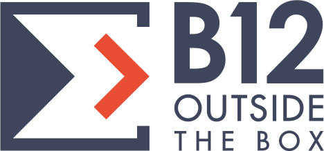
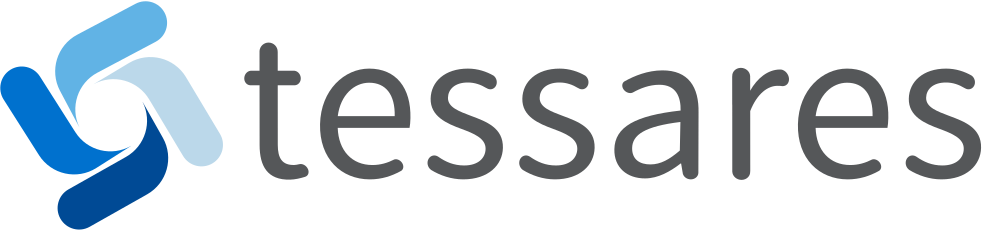

Open Week 2018
Introduction
Objectifs de la semaine
- Faire un pas dans l'univers de l'Open Source
- S'impliquer dans un projet de long terme
- Apprendre de nouveaux outils et de nouvelles technologies
- Avoir un exemple d'application de vos études
- Passer un bon moment
Déroulement de la semaine
- Petit déjeuner le matin
- Contribution aux projets au matin et l'après midi
- Présentations et/ou activités chaque jour
- Repas à midi (RestoU typiquement)
- Activités de détente quand vous le désirez
S'il vous plaît, ne mangez/buvez pas dans les salles info, sauf dans la salle Parnas qui est prévue pour ça
Sponsors
- Cette semaine serait impossible sans nos sponsors
- 4 présentations de leur part
- B12 viendra partager un repas avec nous


 
Les projets de cette année
- Syllabus interactif : backend et contenu
- Mini station météo sur Raspberry Pi
- Créer des exercices blockly sur INGInious
- Un jeu mobile pour le Kap Hot
- Plugin ICTV
Syllabus interactif
- Nouvelles fonctionnalités (ex: double panel pour l'édition, système de traduction, etc.)
- Exercices python avec un contexte très développé
Mini station météo sur Raspberry Pi
- Récupération de différents types de données via des capteurs
- Traitement des données pour créer des graphiques
- Affichage des résultats sur un serveur web
Exercices Blockly
- Blockly est un langage de programmation basé sur des blocs
- Utile pour l'apprentissage de l'informatique chez les jeunes
Jeu mobile pour le Kap Hot
- Création de petits jeux éductatifs
- Utilisation de Gideros et Lua
Plugin ICTV
- ICTV est le programme qui affiche les slides sur les écrans du département (entre autres)
- Le plugin peut être uniquement sur ICTV
- TODO: voir ce qu'ils ont eu comme idée de plugin finalement
Organisation pratique
- Pour faciliter l'organisation, vous serez séparés en groupe dans chaque projet
- Au milieu de la semaine, vous aurez l'opportunité de changer de projet
Nous avons fait une répartition initiale en fonction de vos réponses au formulaire.
Avant de commencer à travailler
- Courte présentation du projet sur lequel vous allez bosser
- Suivie par une courte présentation Python pour ceux qui le souhaitent
C'est parti!